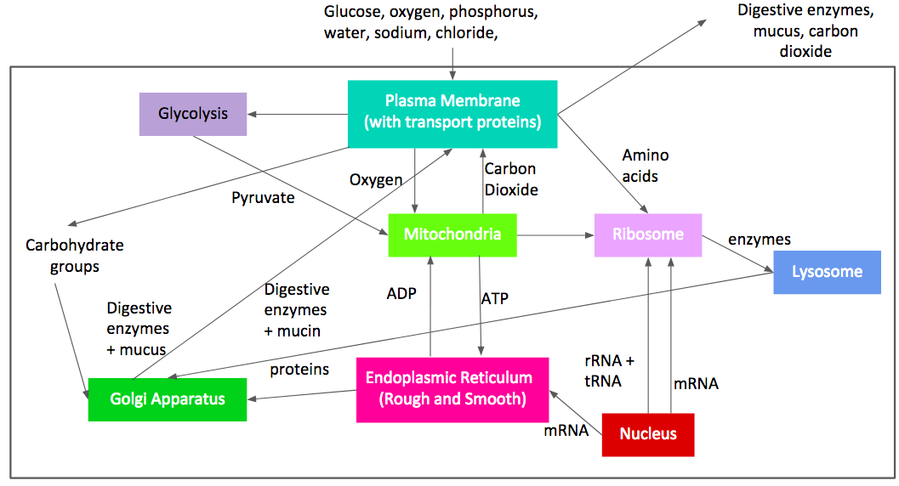
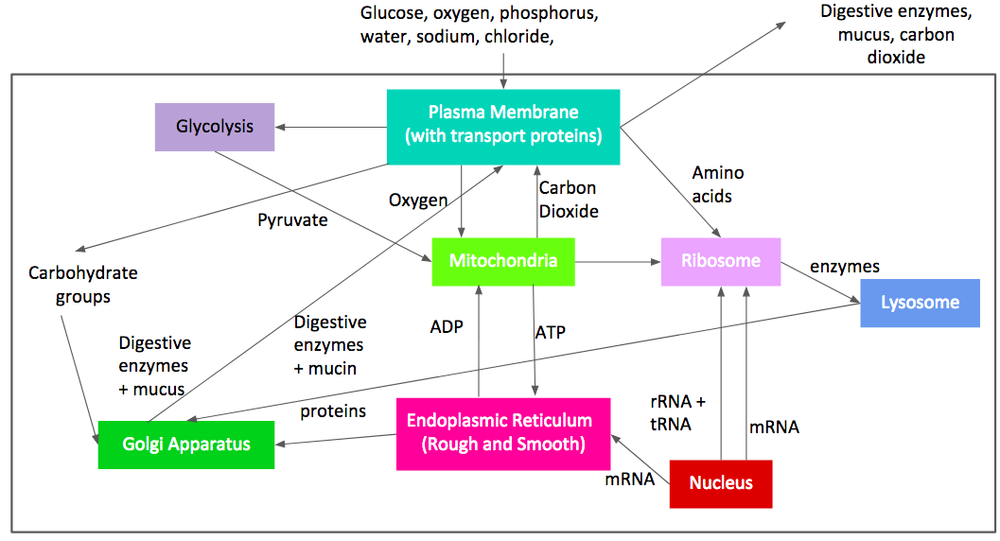

Poriferans
Fg.5

Brain Sponge
-
Sponges do not have a nervous, digestive or circulatory system. They rely on maintaining a constant water flow through their bodies to obtain food and oxygen and to remove wastes. Sponges have a unique feeding system among animals. Instead of a mouth they have tiny pores, or ostia, in their outer walls through which water is drawn. Cells in the sponge walls filter food from the water as the water is pumped through the body and the osculum, or the "little mouth". The flow of water through the sponge is in one direction only, driven by the beating of flagella which line the surface of chambers connected by a series of canals. Sponge cells perform a wide range of bodily functions and appear to be more independent of each other than are the cells of other animals
(“Porifera”).
Fg.4

Cnidarians

Fg.6
Vd.1

The cnidarians perform extracellular digestion in which the food is taken into the gastrovascular cavity where enzymes are secreted into the cavity and the cells lining the cavity absorb nutrients. The gastrovascular cavity has only one opening that serves as both a mouth and an anus; this is known as an incomplete digestive system. Cnidarian cells exchange oxygen and carbon dioxide by diffusion between cells in the epidermis with water in the environment, and between cells in the gastrodermis with water in the gastrovascular cavity. There is no excretory system or organs; nitrogenous wastes simply diffuse from the cells into the water outside the animal or in the gastrovascular cavity (“Boundless Biology”).

Fg.7
Platyhelminthes
Fg.9

Planaria
Fg.8

The Turbellarian flatworm, like the Planarian, has a two way digestive system, excreting out of its mouth (McDarby). The worm uses its mouth and pharynx to suck food into its gastrovascular cavity, where it is digested by phagocytes of the gastrodermis. The nutrients travel to the rest of the worm’s body through a tree-like system that branches out from the intestine. The flatworms cannot continuously process food because they are unable to simultaneously feed, digest, and eliminate waste products. There are three classes of Platyhelminthes: Turbellaria, Cestoda, and Trematoda. Both Cestoda and Trematoda undergo intracellular digestion, simply absorbing nutrients from their environments. An example of a cestode is the tapeworm.

Nematoda
Nematodes have a complete digestive system separated into three parts: the stomodeum, the intestine, and the proctodeum. The stomodeum is the start of digestion, and includes the mouth. The type of mouth opening and accompanying buccal cavity appears to be related to diet. A large mouth opening and prominent buccal cavity is found in those nematodes that feed by taking a bite of mucosa, and drawing it into the buccal cavity where it is digested. These nematodes are often called "plug feeders". In nematodes that feed by simple ingestion of host fluids the mouth opening and accompanying buccal cavity are generally quite small. The middle part is the intestine, a simple tube that contains digestive enzymes that aid in nutrient absorption. There are no muscles in the intestine, so the movement of the worm is what pushes the material down the intestine. The last part of the digestive system is the proctodeum, which involves the excretion of any waste material at the other end of the worm (Johnstone).

Ancylostoma caninum

Dissected Roundworm
Vd.2
Annelida
The body of an annelid, a segmented worm, is analogous to a tube with a smaller tube inside. The inner tube is the digestive tract, which is separated from the body wall by the coelom, the fluid in between. Annelids have a complete, one-way digestive system. The mouth, connected to the pharynx, sucks in dirt and other materials that travel to the crop. The food then moves to the muscular gizzard, where it is mashed into much smaller pieces. Cells lining the digestive cavity finish digesting the food. Then the dissolved nutrients move to other cells of the body. Undigested food passes back out through the mouth, as in the cnidarians. After being chemically digested in the intestine, the unused material is excreted through the anus. Annelids are unable to undergo digestion within cells (Reish). The excretory system consists of structural units called nephridia. Each nephridium contains a ciliated tunnel that leads to a long, coiled tubule, which leads to a bladderlike sac, a primitive bladder. Consumed fluid moves from the internal environment into the funnel. As fluid passes through the tubule, cells in the tubular lining absorb useful compounds such as glucose, amino acids, and salts. The remaining materials constitute metabolic waste, and they are passed into the bladderlike sac. The sac later opens through a pore in the earthworm’s skin, from which the waste products are discharged.

Arthropods
Food digestion all starts in the mouth, which is a single pouch-like area where it serves as not only a mouth, but also an anus. After the food has entered the body, it travels through a tube called the alimentary canal running with the bodies' length. It also just happens that when the food is ingested it only travels in one direction unlike other phylums where it would travel through the body in multiple directions through all the different organs. Insects also have salivary glands where there is chemical digestion which aids in the absorbing and breaking down of the nutrients (Barnes). Crayfish, a crustacean, have pincher claws that they use to obtain food, tear it apart, and put it closer to their mouth. From the mouth, the food travels down the esophagus to the cardiac stomach, where it is ground up. The food then moves to the intestine, where nutrients are absorbed into the bloodstream. The waste is finally excreted through the anus. There are glands located internally behind each antennae that work to filter fluid waste from the blood (Green). The first part of the digestive system of a grasshopper, or an insect, is the stomodaeum, which is broken into four parts: First the pharynx and the oesophagus, where the food passes through first. Next is the crop, which is thin-walled and is responsible for storing food. Last is the gizzard, which is the muscular chamber that grinds and filters food. It has six, hard teeth called denticles. The digestion and absorption of food occurs in the next part of the digestive system, called the midgut. The final part of the digestive system of the grasshopper is the proctodaeum, the posterior portion between the midgut and anus. The first two parts of the proctodaeum are the ileum, the short interior portion, and the colon, the corrugated middle portion. The last portion is the rectum, which is enlarged and is responsible for reabsorbing water. Finally the waste is excreted through the anus (“Digestive System of Cockroach or Grasshopper”).


{kind=link}
{kind=link}
{kind=link}
Mollusca
Organisms in the mollusca phylum possess a complete digestive system that varies amongst species. Clams, like sponges, are filter feeders. Food-containing water enters through the incurrent siphon and passes over the gills. The gills produce a sticky, glue-like material called mucus. Food becomes trapped in the mucus. The cilia are responsible for transporting the trapped food to flap-like structures called labial palps. The labial palps gather the food and place it into the clam's mouth. After water passes over the gills, it exits the clam through the excurrent siphon which is located next to the incurrent siphon. The siphon consists of a mouth where food is ingested, a short connecting tube called the esophagus, a stomach which temporarily holds food, and an intestine where food digestion and absorption takes place. A digestive gland surrounds the stomach and releases digestive enzymes into the food within the stomach. Digestion is extracellular: this means that digestive enzymes break food down into food particles and food molecules within the hollow intestine. Food molecules diffuse or are actively transported into the cells lining the intestine. Food is distributed to the cells of the body by blood. Digestive waste leaves the digestive system through the anus. This is located near the excurrent siphon, and the digestive waste is carried out of the clam by water moving outward (“BIO 5 GENERAL BIOLOGY”). The organs of the digestion in squid include the jaws, radula, salivary glands, esophagus, liver, stomach, intestine and anus. Squid typically eat twice a day. Food is grasped in the horny jaws and gripped by the radula, which is like a tongue with teeth. The radula transfers the food to the throat, from which it passes to the esophagus. The esophagus connects the mouth to the stomach. The esophagus receives digestive juices from salivary glands. Some glands may secrete a toxin as in select species of octopus. In squid, the juices of the digestive gland are not harmful to people. The esophagus empties into the stomach. The stomach is a small, shiny white sac that connects to the stomach pouch or caecum. Digestion begins in the stomach. The caecum also performs some digestion and is the primary site of absorption of nutrients in squid. Digestive enzymes are added by the liver, a large oval, brownish organ, and the pancreas. Enzymatic secretions may be added to the stomach or caecum in separate phases. The stomach and caecum are usually found behind the liver. The stomach pouch dumps its contents into the intestine, a narrow tube adjacent to the stomach pouch. The intestine empties into the rectum and finally, the terminal end of the digestive system, the anus. The anus empties into the funnel or siphon, which is the exit for all waste products ("Squid Lab").

Dissected Squid
Fg.12

Fg.11
Fg.13 Dissected Clam
Echinodermata
Generally, echinoderms have a simple digestive system comprised of a mouth, stomachs, intestine, and anus. In many, the mouth is on the underside and the anus on the top surface of the animal. The starfish has a unique digestive system as it does in fact have a mouth and an anus. This however is not the only way starfish are able to eat, they have the ability to devour a prey by pushing their stomachs outward thus allowing them to eat the prey from the exterior. If they eat the food through their mouth, it travels down the esophagus, to one of the stomachs, the cardiac stomach. After it goes through this stomach, the food goes to another stomach called the pyloric stomach. Then even after this, it goes to another part of the body, the digestive glands. This is where the actual absorbing and processing of nutrients happens. Starfish do contain a small intestine where it is connected to the stomach to take the absorbed nutrients to the external port where the waste is then excreted (“Echinoderms”).


Dissected Sea Cucumber
Vd.4
Dissected Seastar
Chordata
In chordates, saliva secretion is a reflex act stimulated by the presence of food in the mouth. The amount of mucus present in saliva is regulated by the dryness or moistness of the food consumed; the drier the diet, the more mucus produced. After the food is moistened by the saliva, it moves from the mouth into the pharynx and the esophagus; they act as a passageway for food by connecting the mouth to the stomach. The stomach performs the function of storing food. Enzymes secreted by the gastric glands present in the walls of the stomach facilitate the breakdown of food. Stomach acid and other digestive fluid or enzymes facilitate the breakdown of food. Between the stomach and the small intestine lies an opening called pylorus. The movement of food from the stomach into the small intestine is regulated by pyloric sphincter valve. The absorption of nutrients takes place in the small intestine. Membranous tissue called mesentery prevent the movement of the small intestine in the abdominal cavity. The partially digested food moves into the small intestine, which is divided into duodenum and ileum. Duodenum almost runs parallel to the stomach, whereas the coiled section of the small intestine is referred to as the ileum. In the small intestine, bile and pancreatic juice aid in the process of digestion. Bile is a digestive fluid that is produced by the liver. The largest organ present in the body cavity, the liver comprises three lobes. Gallbladder is a small sac that is located under the liver. It acts as a reservoir for bile. Bile helps in the digestion of fat, whereas proteins and carbohydrates are broken down into simpler molecules by the enzymes produced and secreted by the pancreas. Bile and pancreatic juice flows through the common bile duct into the small intestine. After the absorption of nutrients, the undigested food moves into the large intestine. The large intestine also stores the undigested food. It performs the function of absorbing water from the food residue. The solid waste moves towards the cloaca. Water or liquid waste moves to the urinary bladder. Solid as well as liquid waste is expelled out of the body through the cloacal opening. Mucous cells found throughout the stomach lining and gastric pits secrete mucus to protect the stomach from its own digestive secretions. These specialized exocrine cells of the mucosa secrete mucus into the lumen of the stomach and into the gastric pits. This mucus spreads across the surface of the mucosa to coat the lining of the stomach with a thick, acid- and enzyme-resistant barrier. Stomach mucus is also rich in bicarbonate ions, which neutralize the pH of stomach acid. Golgi Apparatus is responsible for the packaging and transporting macromolecules, even the secretion of mucus in mucous cells. Within the Golgi body, various chemical groups are added to the macromolecules so ensure that they reach their proper destination. The protein component of mucous, called mucin, is modified in the Golgi body by the addition of carbohydrate groups. From the Golgi body, the modified mucin is packaged within a vesicle. The vesicle containing its mucous cargo fuses with the plasma membrane of the goblet cell, and is released into the extracellular environment (Haak).


Dissected Fetal Pig
 


Dissected Frog
Evolution

Fg.14
As animals evolved over time, the overall complexity of each successive phyla’s digestive system increased in complexity. Starting with the Porifera, which arose 2.5 billion years ago, they were the first animals that were capable of taking in nutrients from their surroundings, yet they lacked a digestive system. Next were the Cnidarians, who also had an incomplete digestive system. The Cnidarians evolved to have a gastrovascular cavity, which is important in absorbing nutrients from a central location in the animal and spreading it to the rest of the body. The third phylum with an incomplete digestive system is the Platyhelminthes. These also have a gastrovascular cavity that acts as a sort of intestine (only found Turbellarian worms). The first animal phyla with a complete digestive system is Nematoda. Nematodes differ in that they have a mouth and anus, making it easier to ingest and excrete material. Unliked Planaria which have a one-way digestive tract, Nematodes have an evolved two-way tract that avoids the inefficiency of excreting out of the same hole that food is digested in. Both the phylums Mollusca and Annelida have complete digestive systems. Mollusks have a stomach and intestine, making it easier to digest food in different stages, rather than all at once in a singular intestine or gastrovascular cavity. Similarly, Annelids have a crop to store food and a gizzard to crush it into smaller pieces, again to condense the food digestion process into simpler steps. Arthropods also have a complete digestive system. They differ from previous phyla in that they have appendages to grab food and bring it to their mouths. Additionally, the Arthropod digestive system contains specialized organs that allow ingestion, digestion, nutrient absorption, and excretion to occur simultaneously and thus effectively. Lastly are Chordata, with the most complex digestive system. Many chordates have additional organs such as the small intestine and liver that assist in the compartmentalization of the various processes involved in digestion. By further condensing each step of digestion such as the breakdown of fats and the release of nutrients into the bloodstream, the system becomes more productive.